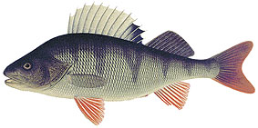
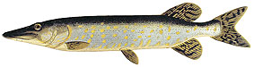
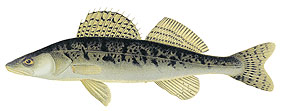
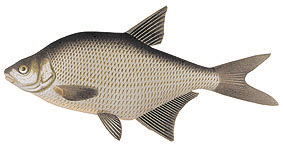

Here you can find out what temperatures and depths you can find your favourite fish from..

Ahven
Ahven lives in slow-flowing rivers, lakes and ponds. At night at the bottom, resting in the vegetation hidden.
Found everywhere else except in the north. When it breeds, it gathers in the shore water in the spring when the water temperature exceeds 6 degrees.
It catches best at dawn and dusk, even after rainy and cloudy days. It is most comfortable in warm waters.
Spring is the best time to catch ahven in shallow waters.
Hauki

Hauki thrive excellently at depths of less than four metres.
Large Hauki live at the edge of deep water. The growth rate accelerates when the temperature exceeds 10 degrees.
Hauki occurs in cool in warmer and warmer water.
Kuha

Kuha is found in the southern and central parts of the country.
It is a relatively warm water fish that lives not only in inland waters but also in low-salinity brackish water.
Good kuha waters are considered to be large, cloudy, often slightly eutrophic lakes with spawning areas that warm up quickly in early summer
Lahna

It's natural range extends to the Oulujoki river in the north, and in the north of it,
the fish can be found in some places transferred to water work.
Lahna live in lakes, shallow sea bays and slow-flowing rivers and move in shoals
.